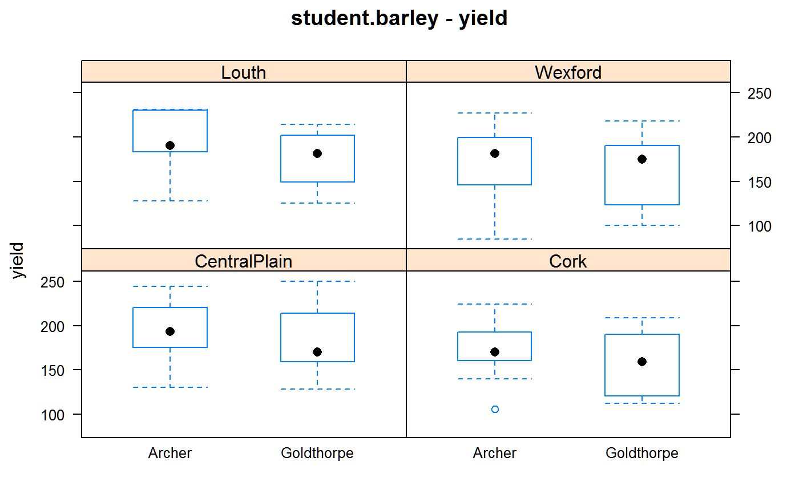

student.barley.RdYield for two varieties of barley grown at 51 locations in the years 1901 to 1906.
A data frame with 102 observations on the following 7 variables.
yearyear, 1901-1906
farmerfarmer name
placeplace (nearest town)
districtdistrict, geographical area
gengenotype, Archer and Goldthorpe
yieldyield, 'stones' per acre (1 stone = 14 pounds)
incomeincome per acre in shillings, based on yield and quality
Experiments were conducted for six years by the Department of Agriculture in Ireland. A total of seven varieties were tested, but only Archer and Goldthorpe were tested in all six years (others were dropped after being found inferior, or were added later). Plots were two acres in size. The value of the grain depended on the yield and quality. Quality varied much from farm to farm, but not so much within the same farm.
The phrase "analysis of variance" first appears in the abstract (only) of a 1918 paper by Fisher. The 1923 paper by Student contained the first analysis of variance table (but not for this data).
One stone is 14 pounds. To convert lb/ac to tonnes/ha, multiply by 0.00112085116
Note: The analysis of Student cannot be reproduced exactly. For example, Student states that the maximum income of Goldthorpe is 230 shillings. A quick glance at Table I of Student shows that the maximum income for Goldthorpe is 220 shillings (11 pounds, 0 shillings) in 1901 at Thurles. Also, the results of Kempton could not be reproduced exactly, perhaps due to rounding or the conversion factor that was used.
Student. 1923. On Testing Varieties of Cereals. Biometrika, 15, 271--293. http://doi.org/10.1093/biomet/15.3-4.271
R A Kempton and P N Fox, 1997. Statistical Methods for Plant Variety Evaluation.
library(agridat) data(student.barley) dat <- student.barley libs(lattice) bwplot(yield ~ gen|district, dat, main="student.barley - yield")dat$year <- factor(dat$year) dat$income <- NULL # convert to tons/ha dat <- transform(dat, yield=yield*14 * 0.00112085116) # Define 'loc' the way that Kempton does dat$loc <- rep("",nrow(dat)) dat[is.element(dat$farmer, c("Allardyce","Roche","Quinn")),"loc"] <- "1" dat[is.element(dat$farmer, c("Luttrell","Dooley")), "loc"] <- "2" dat[is.element(dat$year, c("1904","1905","1906")) & dat$farmer=="Kearney","loc"] <- "2" dat[dat$farmer=="Mulhall","loc"] <- "3" dat <- transform(dat, loc=factor(paste(place,loc,sep=""))) libs(reshape2) datm <- melt(dat, measure.var='yield') # Kempton Table 9.5 round(acast(datm, loc+gen~year),2)#> 1901 1902 1903 1904 1905 1906 #> Arnestown_Archer NA NA 1.33 NA NA NA #> Arnestown_Goldthorpe NA NA 1.93 NA NA NA #> Bagnalstown_Archer NA NA NA NA NA 3.83 #> Bagnalstown_Goldthorpe NA NA NA NA NA 3.48 #> Ballinacurra_Archer 2.82 3.11 1.66 2.57 3.14 2.48 #> Ballinacurra_Goldthorpe 1.76 2.98 1.82 2.98 3.28 2.43 #> Birr_Archer NA 3.11 2.46 2.81 3.69 2.75 #> Birr_Goldthorpe NA 2.31 2.01 2.98 3.39 2.50 #> Carlingford1_Archer NA NA 2.95 NA NA NA #> Carlingford1_Goldthorpe NA NA 2.31 NA NA NA #> Carlingford2_Archer NA NA NA 2.01 3.61 2.93 #> Carlingford2_Goldthorpe NA NA NA 2.37 2.82 3.20 #> Castlebridge_Archer NA 2.81 3.12 2.29 2.86 2.92 #> Castlebridge_Goldthorpe NA 2.82 2.50 1.57 2.86 2.65 #> Dunleer_Archer NA NA NA 3.03 3.62 3.61 #> Dunleer_Goldthorpe NA NA NA 2.87 3.14 3.36 #> Enniscorthy_Archer NA 2.84 NA NA NA NA #> Enniscorthy_Goldthorpe NA 2.98 NA NA NA NA #> Greenore_Archer NA NA 2.81 NA NA NA #> Greenore_Goldthorpe NA NA 1.96 NA NA NA #> Monasterevan1_Archer NA NA NA 2.62 NA NA #> Monasterevan1_Goldthorpe NA NA NA 2.59 NA NA #> Monasterevan2_Archer NA NA NA NA 3.64 2.42 #> Monasterevan2_Goldthorpe NA NA NA NA 3.22 2.65 #> Monasterevan3_Archer NA NA NA NA NA 3.14 #> Monasterevan3_Goldthorpe NA NA NA NA NA 3.48 #> Nenagh_Archer 2.76 3.04 2.04 3.31 3.61 2.95 #> Nenagh_Goldthorpe 2.51 3.36 2.12 2.89 3.92 2.21 #> NewRoss1_Archer NA NA NA 2.04 NA NA #> NewRoss1_Goldthorpe NA NA NA 1.76 NA NA #> NewRoss2_Archer NA NA NA NA 3.26 3.56 #> NewRoss2_Goldthorpe NA NA NA NA 3.42 3.09 #> Portarlington_Archer NA NA NA 3.03 3.03 NA #> Portarlington_Goldthorpe NA NA NA 2.81 2.64 NA #> Thurles_Archer 3.80 NA NA NA NA NA #> Thurles_Goldthorpe 3.48 NA NA NA NA NA #> Tullamore_Archer NA NA NA NA 3.45 2.23 #> Tullamore_Goldthorpe NA NA NA NA 2.67 2.18 #> Whitegate_Archer 2.56 3.51 2.20 2.68 2.93 2.65 #> Whitegate_Goldthorpe 1.95 3.26 1.84 2.57 2.84 2.23#> [1] 2.895005#> [1] 2.685164#> [1] 0.2098409#> [1] 0.05336873#> [1] 0.7652551if(0){ # Kempton Table 9.6b libs(lme4) m2 <- lmer(yield~1 + (1|loc) + (1|year) + (1|loc:year) + (1|gen:loc) + (1|gen:year), data=dat, control=lmerControl(check.nobs.vs.rankZ="ignore")) }